Arch 安装教程，支持UEFI和BIOS两种方式。官方教程地址。
环境准备
真机
引导模式
在真机上装 Arch ，尤其是准备装双系统，建议了解下自己主板兼容的引导模式。开机时 按下 F2 键，进入主板系统界面。
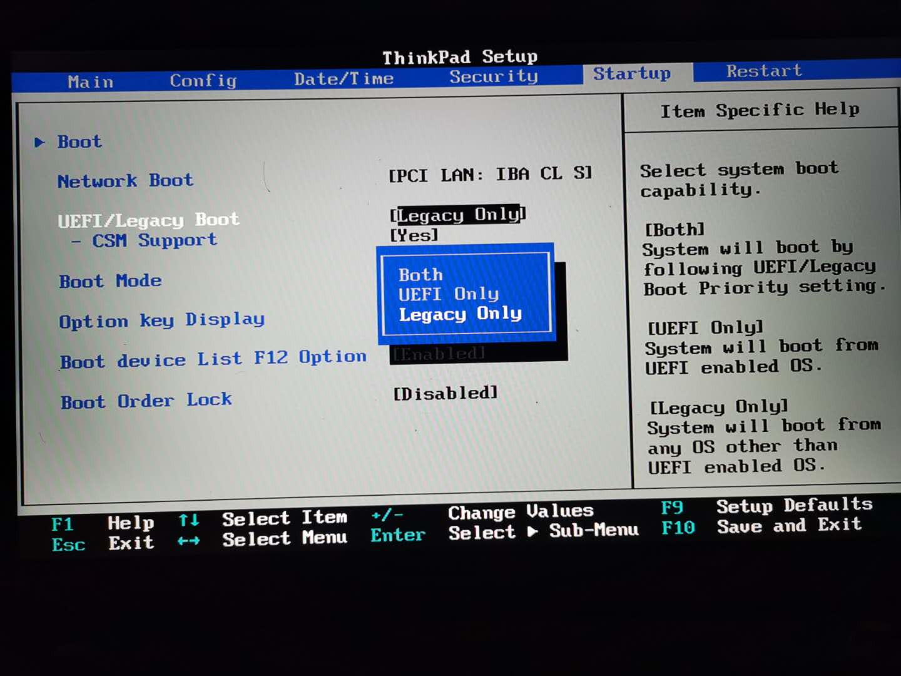如图示的主板信息，支持 Legacy （传统模式，记BIOS）和 UEFI 模式。不同的模式，在后续分区操作、安装引导程序时略有区别。如需安装双系统，建议使用 UEFI 模式。
制作启动盘
Arch 系统镜像比较小，约 700MB 。官方下载地址，通常比较慢，建议使用国内镜像下载地址：清华镜像，中科大镜像。
使用 UtraIso 工具将下载下来的 ios 文件写入 U 盘中。具体破解方式和制作启动盘的方式百度有很多。
最后在开机时，按住 F12 出现如下页面，选择从 U 盘启动。
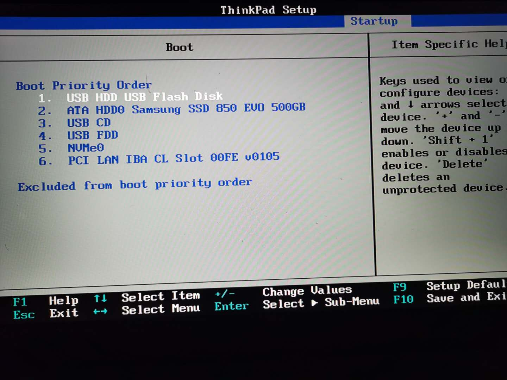不同主板之间略有差异，F2 和 F12 支持多数主板，如无效，则需要确认好主板厂商，了解到具体的设置方式。
安装过程中，需要一根网线直连路由器，比在安装过程中使用拨号连接和 wifi 连接方便。
虚拟机
推荐使用 VirtualBox 虚拟机，下载地址。
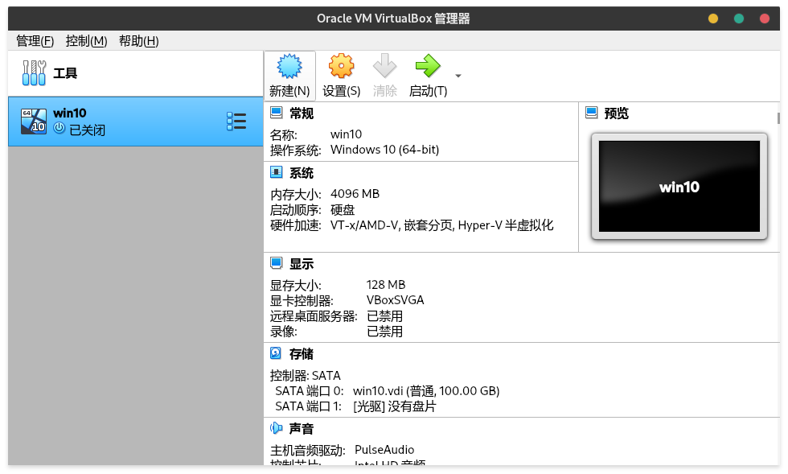新建虚拟电脑。
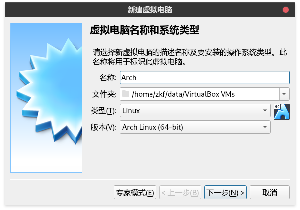设置系统类型。
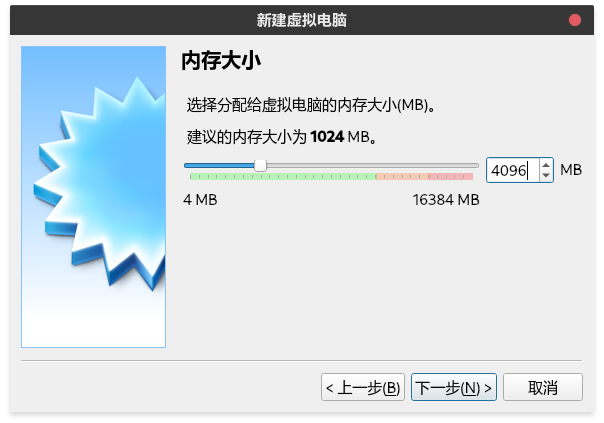设置内存大小，根据实际内存大小分配。最少1G，建议2G。如果内存够大，请任性些。1GB=1024MB。
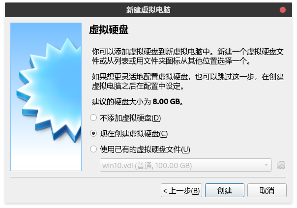创建虚拟硬盘。
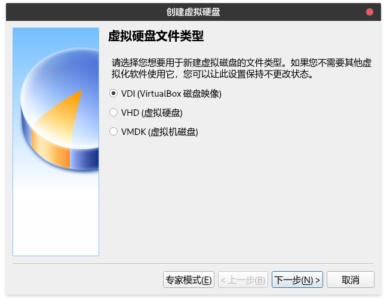选择虚拟硬盘文件类型。
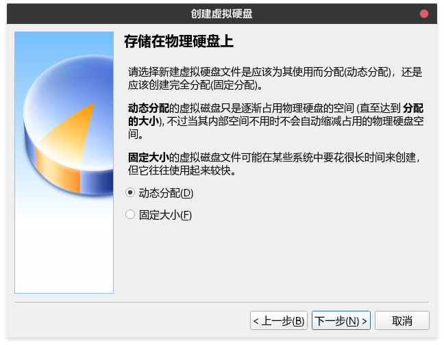设置使用动态分配的方式。即，设置虚拟硬盘100G，最后根据实际的系统占用空间，占用物理硬盘空间。
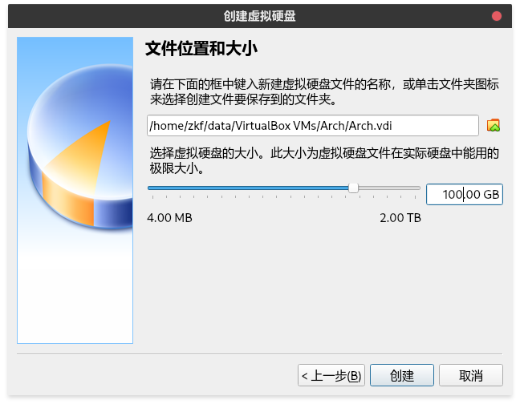确认虚拟硬盘文件位置和大小后，创建虚拟电脑。再次打开设置。

设置系统启动顺序。硬盘第一，光驱第二。
设置是否启用 EFI 。同主板的 BIOS 和 UEFI 区别。
如果主机是多核多线程 CPU ，可以适当添加 CPU 数量。
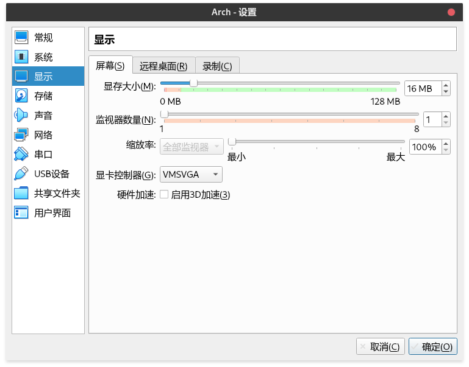设置显存大小，建议模式。
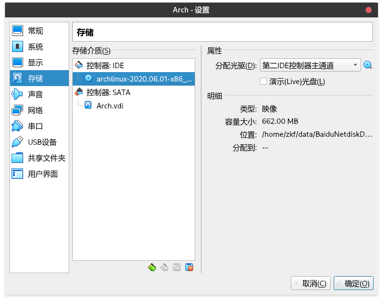对虚拟光驱，添加下载下来的安装镜像文件。
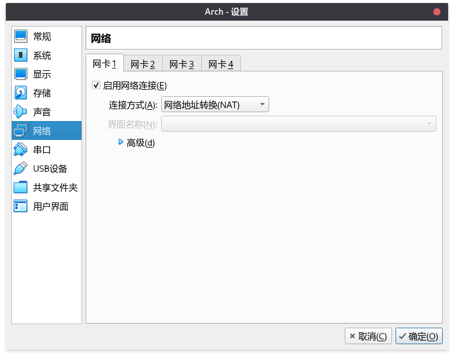网络模式中，选择 NAT 模式。这样，虚拟电脑可以使用真机网络。
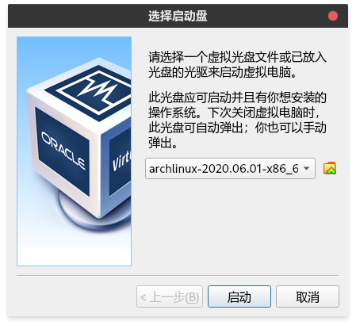配置完成后，启动虚拟电脑。
安装系统
为方便截图，后续操作都在虚拟机中执行。
启动后，可以见到下面两图中的一个。第一个是 BIOS 模式启动，第二个是 UEFI 模式启动。
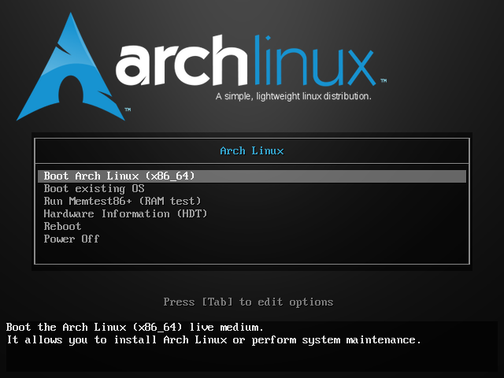 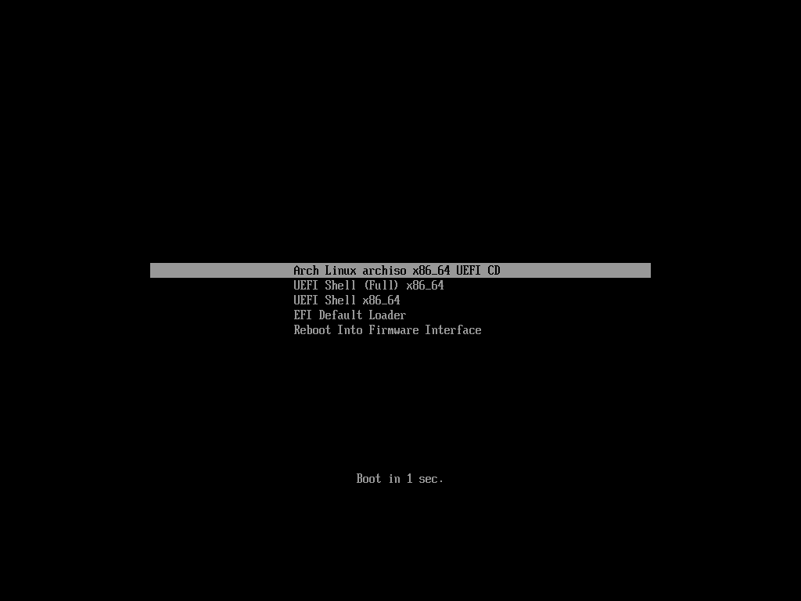启动后，在图示状态下，判断联网情况。真机安装模式下，需要将网线连接路由器，虚拟机安装模式下，需要使用 NAT 联网方式（见虚拟机的配置）。
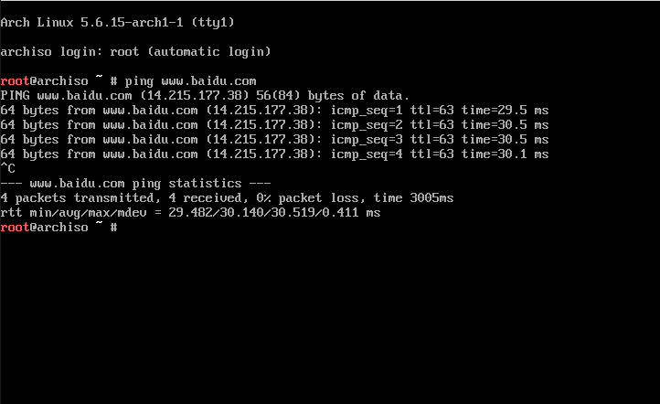1 | ping www.baidu.com |
硬盘分区
真机安装时，硬盘通常已有分区。如无重要数据，可以直接格式化全盘。如，保留硬盘中数据，或安装双系统，请确保至少有一个空的磁盘分区。
Linux 中磁盘概念与 Windows 不一样。第一块硬盘记 sda ，多块硬盘依次记 sda sdb sdc … 。第一块硬盘的第一个分区记 sda1 ，多个分区依次记 sda1 sda2 sda3 …。
虚拟机安装时，之前创建的是一块空硬盘，因此还需要设置分区表。如果在真机上安装时，允许全盘格式化硬盘，也可以重新设置分区表。
分区表有两种，MBR 和 GPT 。对应不同的主板模式。建议 BIOS + MBR ，UEFI + GPT 。换种组合，可能导致，无法正确进入系统，尤其是双系统安装的场景。
1 | 以下是修改硬盘分区时涉及到的命令，不一定需要全部执行。 |
cfdisk 命令弹出可交互式命令终端。真机安装时，希望只在其中一个硬盘分区中安装 Arch ，直接通过方向键选中待安装的分区，如，sda4 ，选择 Delete 删除分区信息。 New 新建分区，输入待分区大小。选择 Type 设置分区类型，主要有三个 ：EFI System，Linux swap Linux filesystem 。选择 Write 写入分区信息。选择 Quit ，退出分区程序。分区示例，如下。
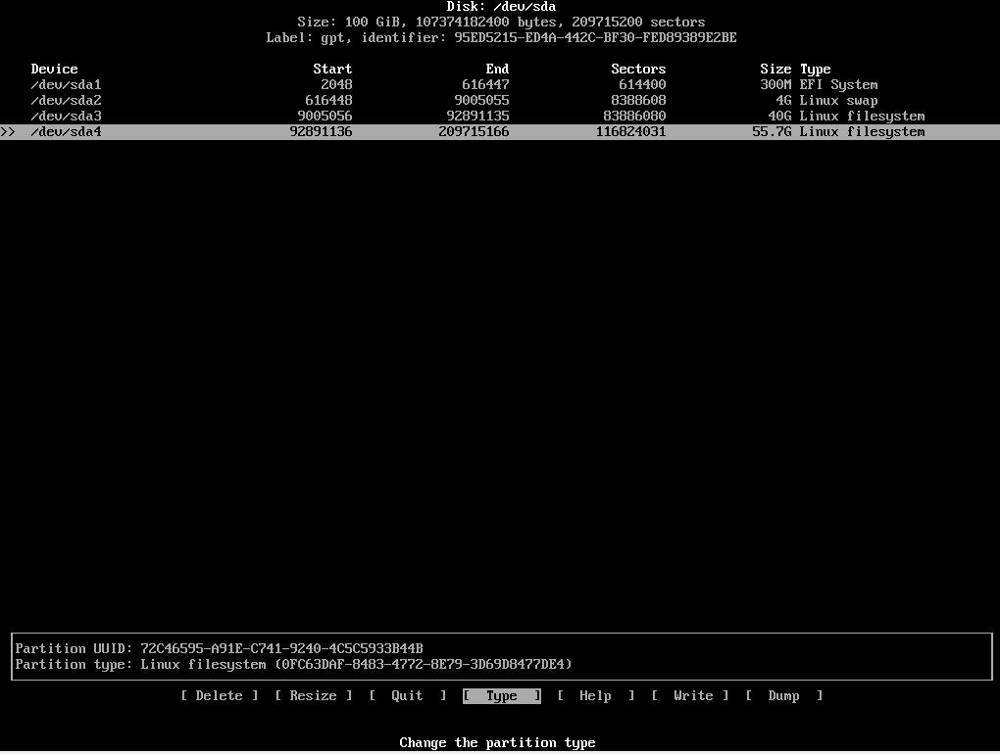分区建议
BIOS+MBR
- 交换空间，4G。挂载点，（可选）。
- 根分区，40G，挂载点 / 。
- 用户分区，剩余可用空间，挂载点 /home （可选）。
UEFI+GPT
- EFI 系统分区，300M，挂载点 /boot/efi。
- 交换空间，4G。挂载点，（可选）。
- 根分区，40G，挂载点 / 。
- 用户分区，剩余可用空间，挂载点 /home （可选）。
- 真机安装时，如果内存够大，如8G，则无须使用交换空间。
- 用户分区非必须。若重装系统时，根分区需要格式化，用户分区则不需要。相当于 windows下 C 盘和 D 盘的区别。
格式化分区
1 | mkfs.ext4 /dev/sda3 # 格式化根分区，Linux filesystem类型 |
挂载分区
1 | mount /dev/sda3 /mnt # 挂载根分区到 /mnt 目录 |
以上命令根据实际分区情况执行。
修改安装源
安装过程，需要下载大量的系统文件，配置国内的安装源，有利于加快安装速度。
1 | vim /etc/pacman.d/mirrorlist # 编辑安装源清单文件 |
安装系统文件
1 | 下载 arch 基础组件和 linux 内核，后面过程，全部回车 |
1 | 生成 fstab 文件，用于启动时挂载硬盘 |
配置系统
1 | arch-chroot /mnt # 进入安装的系统 |
1 | pacamn -S grub # 安装 grub 引导程序 |
1 | exit # 退出系统 |
重新启动后，输入密码如图示：
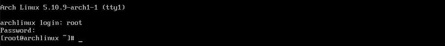设置时区
1 | 设置时区 |
添加用户
1 | useradd -m -G wheel -s /bin/bash zkf #用户名，做开发 首字母 |
本地化
1 | pacman -S vim # 安装 vim，之前可以用 vim 是安装包附带的，新系统需要重新安装 |
至此，Arch 系统即安装配置完成。后续还会有图形化系统安装和桌面美化。
下次开机时，即可登录刚创建的 zkf 账户。或者输入 exit 退出 root ，直接登录 zkf 也可以。
最后两个命令
1 | poweroff # 关机 |